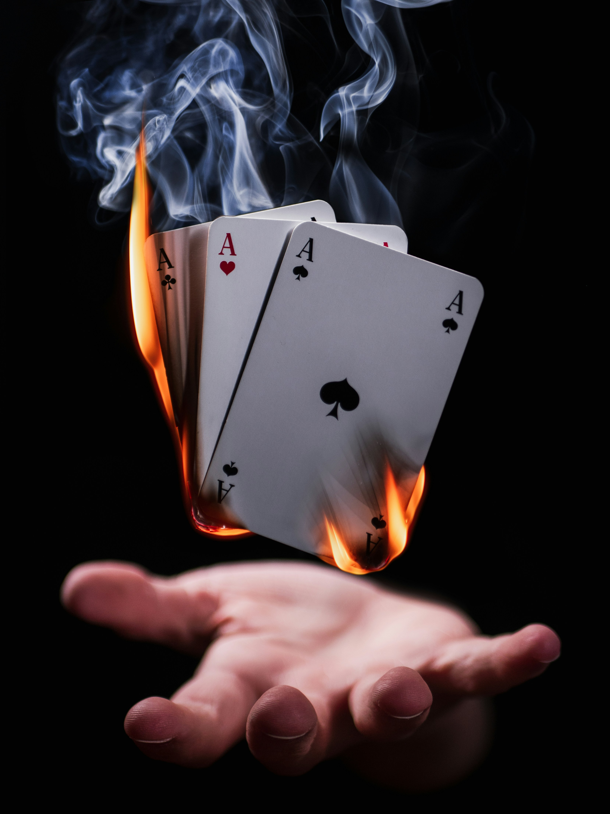

Career Summary
| Job title | Place of Work | Dates | Description |
|---|---|---|---|
| Lead Acrobat Juggler | Grand Circus | June 2023 - Present |
|
| Entertainment Quality Specialist | Silly Circus | July 2020 - June 2023 |
|
| Elephant Caretaker Apprentice | Silly Circus | May 2018-July 2020 |
|
Education and Qualifications
Education
| Bachelor of Arts in Circus Arts | |
| Minor in Acting | Circus University |
| Concentration in Acrobatics | Graduated 2023 |
Qualifications
| First Aid and Safety Training | Certified in CPR and emergency response, because accidents happen. |
| Rigging Safety Certification | Trained in safe rigging practices for aerial equipment, ensuring a secure performance environment. |
| Professional Clown License | Officially licensed to clown, including legally recognized red nose. |
Core Skills
- Advanced Juggling
- Acrobatics
- Ariel Skills
- Clowning
- Flying Out of Cannons
Interests and Hobbies
- Tightrope Walking: Balancing on a high wire hundreds of feet of the ground
- Unicycle Racing: Competing in high-speed, low-stability races (cick the image to learn more!)
- Balloon animal creation: Specializing in dogs and snakes
-
Magic Tricks: Enchanting audiences with audiences with sleight of hand and vanishing acts
